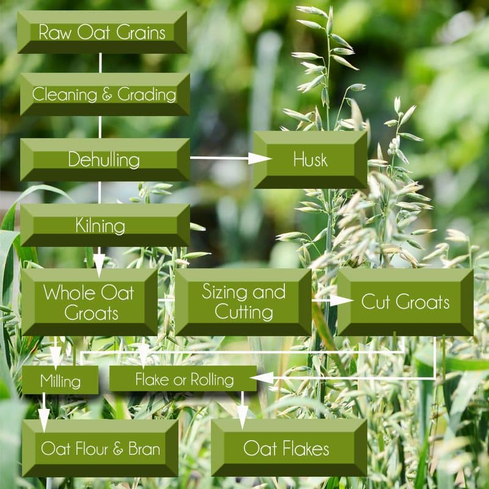
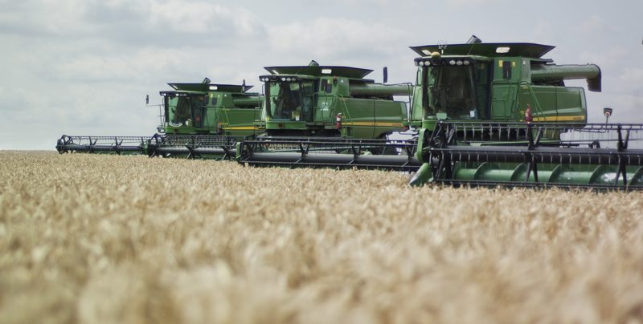

Oats – Will the True Raw Oat Step Forward
Finding out the process in which oat grains are done, took some deep Internet digging. Understanding if they could be TRULY raw was another thing. Raw oats do exist, but they’re not easily obtained. You have to research companies (hoping they share publicly how they process the oat grain) and you typically have to order them online. In my research and communications with oat producing companies, I learned that it all starts with the type of oat grain used. From there, the manufacturing process changes, dictating whether the oats are indeed raw or not once they land in your pantry.

Oats are annual plants and often reach five feet in height. The long leaves have rounded sheaths at the base and a membranous ligule (small appendage where the leaf joins the stem). The flowering and fruiting structure is made up of numerous thin branches bearing florets that produce the one-seeded fruit (oat grain).
I found a company called Montana Gluten Free that states that their oats are indeed RAW as well as gluten-free. I am not affiliated with them in any way… just sharing my research. I read through their website gaining some information but I wasn’t quite satisfied, so I started emailing them with some questions.
Montana Gluten Free Raw Oatmeal is the only raw, rolled oatmeal produced in North America. Most oatmeal manufacturers steam the oats to remove the hulls, then roll or cut them, and finally heat them again to remove the moisture. As Montana Gluten Free’s special variety of oats are naturally hull-less, they need no special treatment before rolling. No steaming, steeping, or cooking is required in the unique process. Learning that they were hull-less caused me to dive deeper into what grain produced this type of oat.
There are two types of oat grains commonly used in the oat industry. That doesn’t mean that there isn’t more, but for today I will be sharing about the Avena sativa L. and the Avena nuda L. grains. For those of us who are looking for RAW oats, we want to start with the Avena nuda L. grain. The main difference between the two following oat grains is in how they are processed.
Facts on Naked Oat (Avena nuda L.)
- It is referred to as either: naked oat, hull-less oats, or Avena nuda L.
- Naked oats belong to the same species as ‘common oats,’ Avena sativa L. (mentioned below), but have a non-lignified husk which readily becomes detached during harvesting.
- The seed can be sprouted and eaten raw or cooked in salads, stews, etc.
- The hull is incompletely attached to the grain, yielding a naked seed easily upon threshing.
- The roasted seed is a coffee substitute.
- Some growers in the northeast avoid “naked oats” because of their low yields and high desirability to birds.
- The species is hermaphrodite (has both male and female organs) and is pollinated by wind.
Byproducts/Waste
- The straw has a wide range of uses such as for biomass, fiber, mulch, paper-making, and thatching.
- When the straw is prepared as an infusion, it is called oatstraw. Oatstraw is a mild-tasting restorative that can be used long-term to calm nerves, tone the circulatory system, and soothe digestion, along with many other benefits. (1)
Processing Raw Oat Grains – Naked Oat (Avena nuda L.)
Cleaning
- Cleaning is the first step in the processing of oat grains.
- Oat seed is shaken with various mesh layers to separate the oat kernel from other plant material in a process that looks a bit like gold mining.
- This is done to remove impurities, like sand and stones, other grains, chaff, and weeds, etc. Even lightweight oats are removed by air aspirators and are used as fodder for animals.
Dehulling
- The next step involves removal and separation of the husk from the grains, to obtain oat groats.
- The cleaned raw oats are fed to a large machine, which throws the grains to a hard surface.
- The impact of the collision of the grains with the hard surface and the resultant abrasion cause separation of the hull from the kernel called groat.
- Because the seed is loose within the hull, it doesn’t require heat to remove it.
Rolling
- Oats to be made into oatmeal are rolled into flakes, squeezed between large rolling pins.
Milling / Grinding
Raw Oat Products

Ripe oat grains ready for harvesting.
Why go into how “cooked” oats are processed?
Well, I believe that is important to understand not only how food grows but also how it ends up on our plates. And frankly, not everyone here is completely raw and should they/you decide that enjoying a bowl of cooked oats is right up your alley… well then, you need to know this stuff too! If you do decide to enjoy a warm bowl of oats, steel-cut oat and oat groats are the least processed forms available.
Facts on Common Oat (Avena sativa L.)
- Common oat is the most important of the cultivated oats.
- Oats (Avena sativa L.), while difficult to process, are relatively simple to grow in the northeast. They do very well in cool, moist climates, grow quickly, and are able to tolerate mild frosts.
- They can be harvested about twelve weeks after they are planted.
- They can be threshed and winnowed just like wheat, but the further processing necessary for human consumption is a rather difficult process.
- Oat groats have a hard, tight hull around them, and this must be removed before eating.
- Dehulling oats is a complicated process, generally done either with a compressed-air or impact dehuller.
Uses for the Common Oat
- The straw has a wide range of uses such as for biomass, fiber, mulch, paper-making, building boards, and thatching.
- It has also been used as a stuffing material for mattresses.
- Oat hulls are basic in the production of furfural, a chemical intermediate in the production of many industrial products such as nylon, lubricating oils, butadiene, phenolic resin glues, and rubber tread compositions.
- Oat hulls are also used in the manufacture of construction boards, cellulose pulp, and as a filter in breweries.
Common Oat (Avena sativa L.) Processing
Common oat is the most important of the cultivated oats. After doing tons of research, Buzzle.com helped to break the steps down in how oats are processed. Raw oat grains undergo various stages of processing to get transformed into different forms. Once ripe, the oat grains are harvested and dried before being transported to the milling plant. This is where the fun begins and they undergo various stages of processing. This process includes water and heat. Therefore ninety-eight percent of the oats that you find at the store are NOT raw.
Cooked Version of Processing Oat Grains

Cleaning & Grading
- Cleaning is the first step in the processing of oat grains.
- This is done to remove impurities, like sand and stones, other grains, chaff, and weeds, etc. Even lightweight oats are removed by air aspirators and are used as fodder (food for cattle and other livestock for animals).
- Once the cleaning is done, the grains are sized and separated into different grades.
Dehulling
- The next step involves removal and separation of the husk from the grains, to obtain oat groats.
- The cleaned raw oats are fed to a large machine, which throws the grains to a hard surface.
- The impact of the collision of the grains with the hard surface and the resultant abrasion cause separation of the hull from the kernel called groat.
- The speed of the machine is set in such a way that only the husks are removed without breaking the groats. In other words, care is taken to ensure maximum yield, by minimizing the number of broken groats.
- Then, the hull is removed using air aspirators and is used as feed for livestock or to produce oat fiber.
- The resultant groats are further cleaned by scouring machines.
Kilning
- Oats contain lipolytic enzymes, which break down the fat in the grain to free fatty acids, which in turn, makes the grains rancid. This enzymatic activity gains speed once the protective husk is removed. In order to avoid this, cleaned groats are subjected to steam treatment, and the heat radiators in the kiln absorb the moisture from the grains.
- This process is unavoidable because, after dehulling, the flavor of groats will turn rancid within four days, unless stabilized by the process stated above.
- Kilning also gives a nutty flavor to the oats.
Sizing and Cutting
- The groats are fed to sizing systems, where machines separate the groats as per their size.
- After separating the large groats, the small groats and the broken pieces are directed to the cutting system. Here, the steel cut oats are made from the small groats and broken pieces.
- Sifters are used to sort out small and large pieces. Small pieces are called baby steel cut, while large pieces are referred to as large steel cut.
- A mixture of both large and small pieces is termed as regular steel cut.
- In case of shortage of broken pieces, whole oat groats are cut into required sizes using steel blades.
Flaking
- This process results in the production of oat flakes or rolled oats, depending upon the raw material used―groats or steel cut oats.
- Before flaking, the whole or steel cut oats must be steamed to increase the moisture and elasticity.
- Once softened, they pass through the rolling mill. Which is usually two large corrugated rolls spinning at the same speed in opposite directions.
- Steel cut oats in different sizes are used to produce quick rolled oats, baby oat flakes, and instant oats.
- Whole groats produce old-fashioned types like regular, medium, and thick rolled oats.
- Before packaging, the flakes are dried and cooled in a fluid-bed dryer and cooler.
Milling
- The milling process involves two methods―oat bran milling and whole flour milling.
- In the first method, oat groats are sent through roll stands, which separate the bran from the flour. This process results in two products―oat bran and oat flour without bran.
- The second method is used exclusively to produce whole oat flour from whole groats. Groats are fed to hammer mills, where it is converted into fine oat flour. The coarse flour, left behind after sifting, is again fed to the hammer mill, and this process continues.
Byproducts/Waste
- The oat hulls that have been removed from the grain are often used for livestock feed and as fuel.
- The most common byproduct of the hulls is furfural, a liquid aldehyde (dehydrogenated alcohol) that is used as a phenolic resin or as a solvent. The list of products that contain furfural includes nylon, synthetic rubber, lubricating oils, pharmaceuticals, antifreeze, charcoals, textiles, plastic bottle caps, buttons, glue, and antiseptics.

One day I want to drive one of these combines and harvest some oat grains!
© AmieSue.com